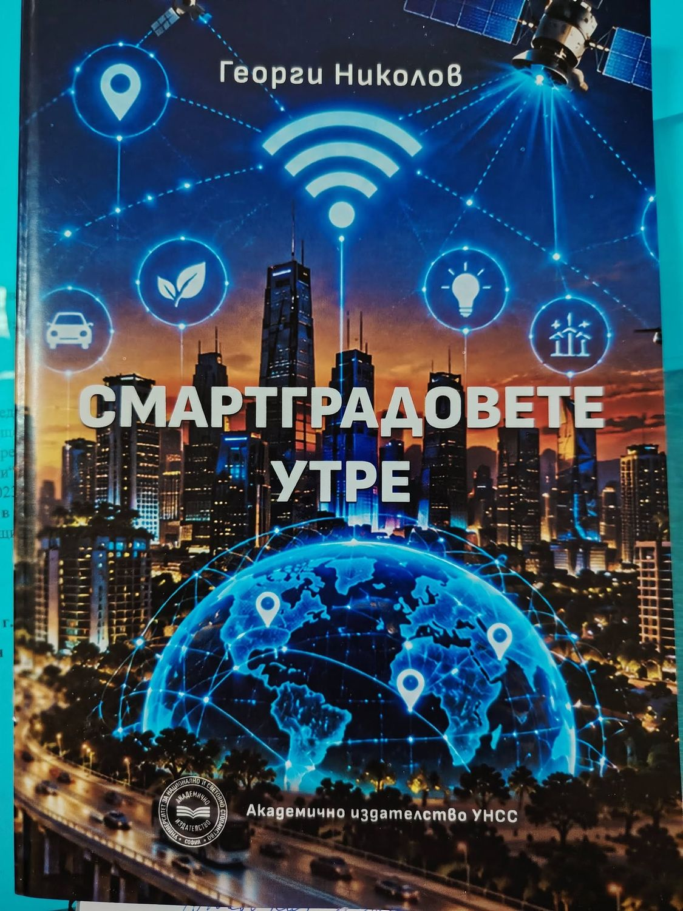
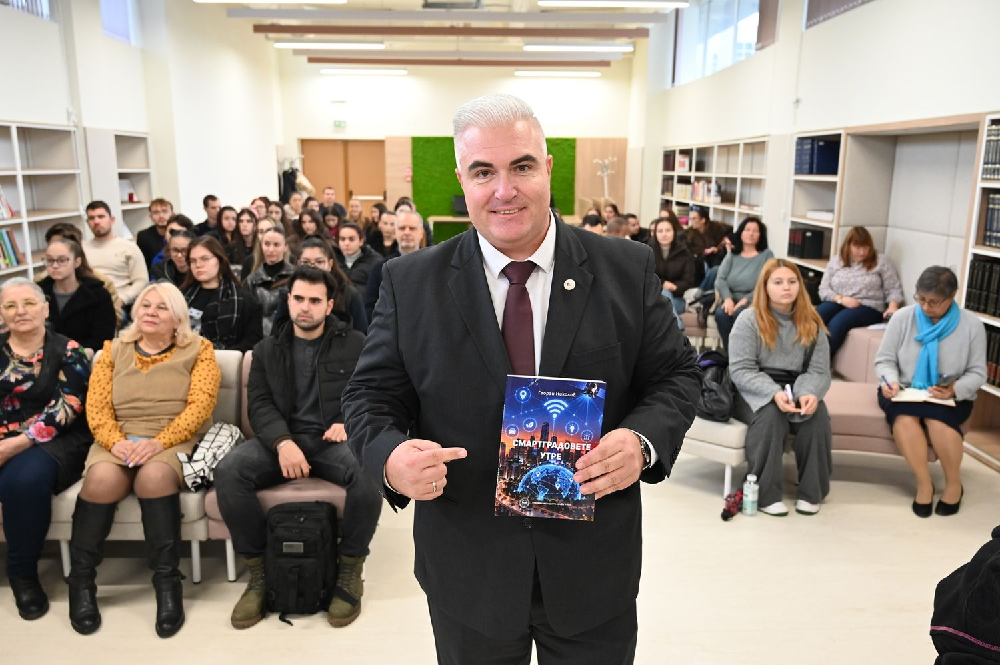
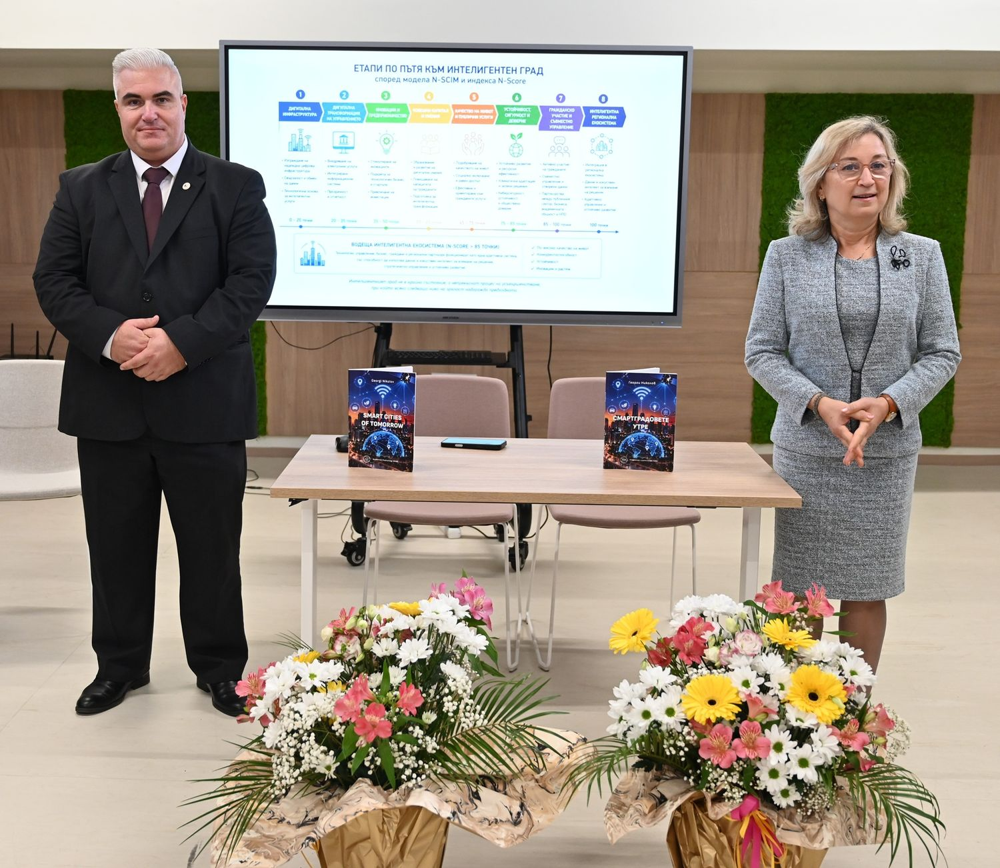

Смартградовете утре — доц. д-р Георги Николов (УНСС)Smart Cities of Tomorrow — Assoc. Prof. Georgi Nikolov (UNWE)
Моделът N-SCIM за развитие на интелигентни градове и регионални екосистеми
Как ще изглеждат градовете на бъдещето? Могат ли изкуственият интелект, цифровите технологии и иновациите да направят градската среда по-добра, управлението по-ефективно, а живота на хората по-качествен? Тези въпроси са в основата на новата научна монография на доц. д-р Георги Николов, издадена от Академично издателство УНСС.
В центъра на изследването са два оригинални научни приноса на автора — Nikolov Smart City Integrated Model (N-SCIM) и интегрираният индекс N-Score. Монографията съчетава теоретичен анализ, международен опит и емпирично изследване сред 306 респонденти.
Основното послание: бъдещето на градовете не се определя единствено от технологиите, а от способността на обществото да ги превръща в по-добро управление, устойчиво развитие и по-високо качество на живот.
За автора
Доц. д-р Георги Николов е преподавател в Катедра „Регионално развитие“ на УНСС, заместник-декан по учебната работа на факултет „Управление и администрация“ и директор на Института за следдипломна квалификация. Научните му интереси са в областта на регионалното развитие, дигиталната трансформация на публичните политики, електронното управление и интелигентните градове.
The N-SCIM model for the development of smart cities and regional ecosystems
What will the cities of the future look like? Can artificial intelligence, digital technologies and innovation make the urban environment better, governance more efficient and people's lives of higher quality? These questions are at the heart of the new scientific monograph by Assoc. Prof. Georgi Nikolov, published by UNWE Academic Publishing.
The study centres on two original scientific contributions of the author — the Nikolov Smart City Integrated Model (N-SCIM) and the integrated N-Score index. The monograph combines theoretical analysis, international experience and an empirical survey of 306 respondents.
The core message: the future of cities is not defined by technology alone, but by society's ability to turn it into better governance, sustainable development and a higher quality of life.
About the author
Assoc. Prof. Georgi Nikolov teaches at the Department of Regional Development at UNWE, is Deputy Dean for Academic Affairs of the Faculty of Management and Administration and Director of the Institute for Postgraduate Qualification. His research covers regional development, the digital transformation of public policies, e-government and smart cities.



blogs.unwe.bg/gnikolov · gnikolov@unwe.bg · N-SCIM (Preprints.org)
© 2026 · Неофициален промоционален проект.Unofficial promotional project.